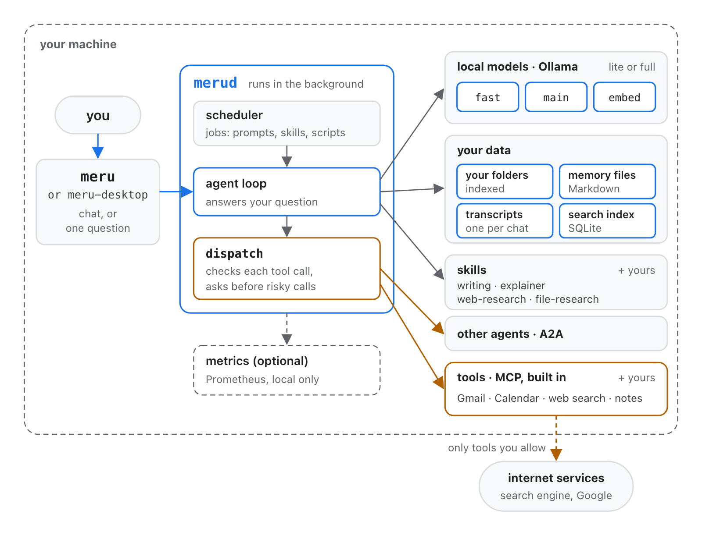

Meru मेरु
A personal AI assistant that runs entirely on your own computer.
In some Eastern traditions, Meru is the cosmic mountain that the sun, moon and stars turn around.
v0.6.2 · October 2026 · aarora79.github.io/meru
github.com/aarora79/meru
Scan for the code
Why
Your most useful data is the data you'd least like to send away
- Years of notes, a full inbox, a calendar and folders of documents hold the answers to most of your questions.
- The assistants that could help want to read all of it in somebody else's data center.
- Every question costs money, needs an account, and depends on a service that can change its price, its terms or its model.
The idea
Bring the AI to your data, on a machine you control
It runs at home
Open-weight models run on your own Mac or Linux machine. Your questions and files stay there.
No cloud model, at all
Meru's code has no path to a cloud AI model, not even one switched off.
No account, no bill
No sign-up and no API key. A question costs the electricity your computer uses.
You can look inside
Your files are the source of truth. Memories and skills are Markdown files you can read and edit.
You choose the tools
Mail, calendar and the web start switched off. Meru asks before anything that sends or changes.
Free and open
Apache License 2.0. Read the code, run it, change it.
What it does
Ask about everything you keep
Your files
Notes, documents, PDFs and code in the folders you pick, searched by words and by meaning. Each answer names its files.
Mail and calendar
Search Gmail, list your events, read Drive files. Sending a mail or changing an event asks you first.
Your notes
An Obsidian vault, and on a Mac, your Apple Notes, read as they are at that moment.
The web
Private search through SearXNG on your machine, and whole pages read when an answer needs them.
Your pictures
Find a photo by describing it, or one like a picture you attach. A model that can see reads receipts and screenshots.
Your voice
Press the microphone, speak, check the words, press Send. Whisper hears you on your Mac.
What it does
An assistant that learns who you are
- Memory. Meru saves what it learns about you as small Markdown files, which you can read, fix or delete.
- Skills. Instructions it loads when a question needs them: writing, explaining, researching the web or your files.
- Where it looks. One switch keeps a question to your files, your mail and calendar, the web, or no tools at all.
- On a schedule. Jobs ask a question or run a skill at the times you set, such as a calendar brief every weekday at 7. Each run lands as a chat.
Questions people ask
- "What did I write about the garden plan last spring?"
- "Summarize this week's mail from the school."
- "Find the photo of the receipt from the hardware store."
- "Draft a reply to that thread and say I can make it."
Meru.app on a Mac, meru chat in any terminal.
How it works

Everything inside the dashed line runs on your machine
- Ollama, a free program, runs the models.
- merud runs in the background and does the work.
- Meru.app and meru are the windows onto it.
- Only tools you allow reach the internet, and every call goes through one checkpoint.
How well
Good answers, sized to your Mac's memory
| Mac memory | Answer model | Tasks passed | First token | Last token |
|---|---|---|---|---|
| under 32 GB | MiniCPM5-2B | 68% | 11.6 s | 13.1 s |
| 32 to 47 GB | Gemma 4 26B | 80% | 17.6 s | 18.3 s |
| 48 to 63 GB | Qwen 3.6 35B, 4-bit | 89% | 5.6 s | 10.4 s |
| 64 GB or more | Qwen 3.6 35B, 8-bit | 89% | 4.1 s | 6.5 s |
50 tasks, each run three times: direct questions, searches of your files, tasks with one tool or several, conversations, and honesty checks. Medians on a Mac Studio (M4 Max, 64 GB), routing, search and tool calls included. The installer picks the model for your Mac.
Privacy
Privacy you can check, not just trust
Stays on your machine
- Your questions and Meru's answers
- Your files, notes and the search index
- Your memories and chat history
- Your voice: no recording is ever kept
- The models, and every word they write
Leaves only when you allow it
- Search words, through the search engine on your machine
- Calls to services you connect, such as Gmail
- Public web pages Meru reads; it asks before any address no search or question of yours gave
- Every tool call is logged:
meru logshows them all
For organizations
A private AI workspace on every desk
The same design that keeps one person's data home keeps a team's documents inside the organization: on the managed machine, with no AI provider in the path.
No data processor
No prompt or document goes to a model provider, so there is no AI vendor to assess or contract with.
Deny by default
A new tool or agent does nothing until configuration names it, tool by tool.
An audit trail
Every tool call, its approval and outcome, in a log on the machine.
For organizations
Controls a security team can check
| Control | How Meru does it |
|---|---|
| Tools | Each tool is on, asks first, or off, in one config file. Sending, deleting or changing asks the user every time. |
| Network | The assistant connects only to its own machine, except to servers marked remote and to public pages it reads, never to private addresses. |
| Secrets | API keys live in one file only the user can read. They never reach the model, the logs or the history. |
| Telemetry | None leaves the machine, and Meru never checks for updates. Metrics go to a Prometheus you run, on the same machine. |
| Supply chain | Every program Meru installs is pinned by version and SHA-256 or image digest; CI signs a record of how Meru's speech server was built. |
| Enforcement | Policy tests in CI fail the build if code adds a cloud model, a second path to a tool, or a forbidden import. |
For organizations
Where it stands today
Ready now
- One person per machine, on a Mac with Apple silicon or an Ubuntu machine, where setup picks the model to fit an NVIDIA card
- Open source under Apache 2.0: audit it, fork it, build it yourself
- Checks every download against the release's checksums, and runs offline once the models are down
- Fits a pilot: a team with sensitive documents on managed Macs
Not there yet
- It is pre-alpha software, built by one person
- No central policy, single sign-on or fleet management
- Windows should work but isn't tested
- Builds aren't signed by Apple yet, so macOS permissions need granting again after updates
Try it
On a Mac or a Linux machine in a few minutes
In a window
Download the Mac installer from the latest release, open it, and open "Install Meru.app". It walks through eleven steps and says what each downloads first.
In Terminal
curl -fsSL https://github.com/aarora79/meru/releases/latest/download/install.sh | bash
It checks every download against the release's checksums, and asks before each step.
Needs a Mac with Apple silicon and 16 GB of memory, and about 2 GB of models to start. On Ubuntu, the same line with install-linux.sh installs Meru, the desktop app and a systemd service. Windows: the running guide on GitHub.
What next
Where Meru goes from here
- It tells you. Digests and notifications from the jobs Meru already runs on a schedule.
- More of your tools. Meru installs, starts and heals third-party MCP servers, as it does Google and Obsidian.
- Tables. Word, Excel and CSV files, and answers about the tables in them.
- Live voice. Words appear as you speak, not after you stop.
- Signed builds. So macOS keeps its permissions across updates.
- Windows. A service and a full test pass.
We build in the open. Contributions are welcome: the issue list on GitHub says what's planned, and the first outside contribution has merged.
Thank you
Your assistant, your machine, your data.
We build in the open, and we're happy to accept contributions: see the issue list on GitHub.
aarora79.github.io/meru · github.com/aarora79/meru · Apache License 2.0
github.com/aarora79/meru
Scan for the code